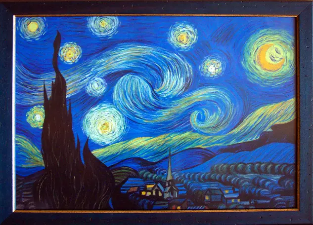

Las Meninas

Las Meninas es una de las obras más emblemáticas. La pintura muestra a la infanta Margarita Teresa rodeada de sus damas de honor, un perro y el propio Velázquez, quien se retrata a sí mismo trabajando en el lienzo.
La obra es famosa por su complejidad compositiva y su innovador uso de la perspectiva.
- Autor: Diego Velázquez
- Fecha: 1656
- Técnica: Óleo sobre lienzo
- Ubicación: Museo del Prado, Madrid
La noche estrellada
La noche estrellada es una de las obras más reconocidas. Con su vibrante uso del color y pinceladas dinámicas, la obra captura la emoción y la belleza del cielo estrellado.
- Autor: Vincent Van Gogh
- Fecha: 1889
- Técnica: Óleo sobre lienzo
- Ubicación: Museo de Arte Moderno, Nueva York
El grito

El grito es una de las obras más icónicas. Ha sido interpretado como una representación del sufrimiento humano y la ansiedad existencial.
- Autor: Edvard Munch
- Fecha: 1893
- Técnica: Óleo sobre cartón
- Ubicación: Museo Munch, Oslo
La joven de la perla

La joven de la perla es una obra maestra reconocida por su uso magistral de la luz, el color y la expresión enigmática de la joven retratada.
- Autor: Johannes Vermeer
- Fecha: 1665
- Técnica: Óleo sobre lienzo
- Ubicación: Museo Mauritshuis, La Haya